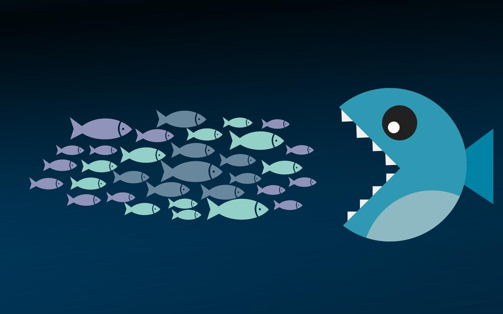

2 min read

A belief in evolution follows, in part, from a belief in science. In other words, current scientific knowledge tells us that all life forms on Earth, including humanity, evolved gradually over long periods of time, rather than being created once and forever in their current forms.
Moreover, in addition to a belief in genetic evolution, the Practical Utopian believes in the evolution of human culture as another big idea.
So a belief in evolution means quite a bit more than simply a denial of creationism. We also mean to imply that we believe in natural selection as a process for improving things, including human culture.
To understand the implications of this belief, let's break down natural selection into its necessary elements.
Resource Scarcity: If every entity had easy access to all the resources it might ever want or need, then natural selection can't favor one thing over another.
Change: If nothing ever changes, then there can be no evolution.
Variation: If all entities in an environment are the same, then it is impossible to select one thing over another.
Preservation: Things that work must largely be preserved. Changing everything at once is generally a recipe for disaster. As in classic scientific experimentation, it's best to keep all of the variables constant except one.
Growth and Decline: A particular entity, or group of entities, must have the ability to either grow – in size, in population, etc. – or decline. These two alternative outcomes, in effect, provide the carrot and the stick to motivate evolution.
Competition: Competition for scarce resources – both between entities and between groups of entities – results in growth for some, and decline for others.
Cooperation, Coexistence and Interdependence: Despite the element of competition, any ecosystem worth its salt also displays a great deal of cooperation and coexistence, both within species and between species. Evolution is not a winner-take-all enterprise. Entities and groups of entities often rely on one another.
So a belief in evolution also implies a belief in the existence and usefulness of the underlying mechanisms of natural selection listed above.
And when we turn our attention to human cultural evolution, we will find the existence and usefulness of these same underlying mechanisms when it comes to improving the human condition.
In other words, if we want a better watch, then we would be well advised to let the blind watchmaker do his job.